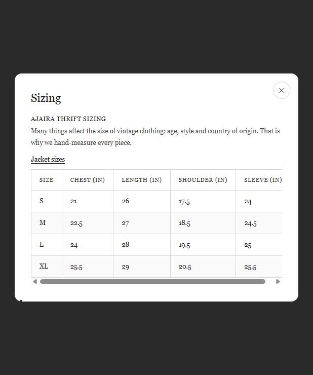
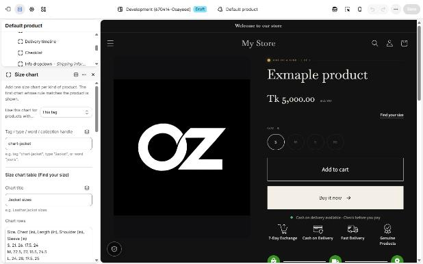
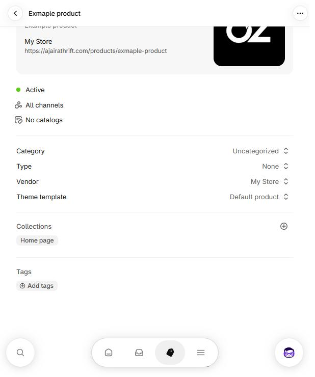

Size charts: how to add them
Ajaira Thrift store. Every product page has a "Find your size" link that opens this chart for customers.

What customers see when they tap "Find your size".
The chart format (same everywhere)
- First line = the column names.
- Then one size per line.
- Separate the cells with a comma
, or a bar |.
- You can add as many columns as you want (chest, length, shoulder, sleeve, waist, ...).
- Tip: you can make it in Excel / Google Sheets, save as CSV, and paste it in.
Size, Chest (in), Length (in), Shoulder (in), Sleeve (in)
S, 21, 26, 17.5, 24
M, 22.5, 27, 18.5, 24.5
L, 24, 28, 19.5, 25
XL, 25.5, 29, 20.5, 25.5
Way 1: one chart for many products (by tag or product name)
Use this when many products share the same sizes, e.g. all leather jackets.
- Shopify admin → Online Store → Themes → Customize.
- At the top, switch the page to Products → Default product.
- On the left, open Product page and click a Size chart block (or Add block → Size chart for a new one).
- In "Use this chart for products with…" choose:
- This tag, then type the tag, e.g.
chart-jacket, or
- This word in the title, then type a word, e.g.
leather.
- Fill in Chart title (e.g. "Jacket sizes") and paste the Chart rows.
- Click Save.
Every product with that tag (or with that word in its name) now shows this chart. Change the block later and all of them update at once.

Theme editor: the Size chart block with the tag, chart title and chart rows.
To give a product the tag: open the product in admin → Tags (right side) → type chart-jacket → Save.

Product page in admin: the Tags box.
Way 2: a chart for one product only
Use this when a single piece has its own measurements.
- Open the product in Shopify admin.
- Scroll down to Product metafields.
- Fill in Size chart title and Size chart rows (same format as above).
- Click Save.
 Product page in admin: Size chart title and Size chart rows.
Product page in admin: Size chart title and Size chart rows.
Which chart shows?
- The product's own chart (Way 2), if it has one.
- Otherwise, the first Size chart block whose tag or word matches (Way 1).
- Otherwise, the default chart (Theme editor → Product page → Size guide).
Leave the chart rows empty to stop using a chart. Products always fall back to the next option above.